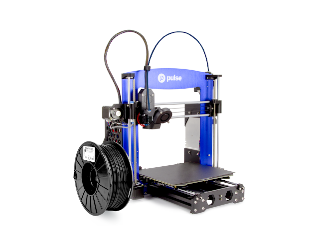

Posted 3 days ago | By Quinn Lee | Blog Posts
3D Printing 101
Ever since it's inception, 3D printing has become more popular each year. With machines becoming cheaper and more filament types and colours becoming available, more people are getting into the world of 3D printing.
With hundreds of machine types and brands available in the market, it can be hard to know where to start. It goes the same for choosing the filament type too, from PLA to TPU there are also dozens of filament types and colours to choose from.
Choosing which type of 3D printer
When it comes to choosing a 3D printer, it can be hard to know which to choose. In this guide, we're only mentioning FDM printers. If you'd like to know more about resin printing go here.
The two main types of 3D printers that are used are either bowden tube printers or direct-drive printers. Whichever you choose is all dependent on what your needs for your 3D printer are.
Bowden printers are pretty basic printers and are used in conjunction with PLA filaments whereas direct-drive drive printers can be used with more advanced filaments like TPU.
What filament do you want?
As discussed in the last paragraph there are a few different filament types that can be used for different purposes.
The most common types are PLA, PLA+, ABS and TPU with other, more specialist types, being Nylon, metal PVA etc.
3D Printing Basics
Now that you've got your machine, you need to set it up.
Depending on which printer you've got, your setup time will vary, some machines are easier to set up than others.
More often than not, the cheaper machines will require more set up than than the expensive machines.
The first thing you wanna do before anything else is level your print bed, you won't be able to print anything if the bed isn't level.
Once the bed is level, print the test print that normally comes on supplied SD card. How the test print turns out will indicate if you need to make any changes.
Slicers
Choosing a slicer to use is probably the easiest part of 3D printing, there are only a few to choose from.
Sometimes your machine will come with a USB stick with the recommended slicer software and more often than not, it'll be Cura.
You can use slicers like Voxelab maker or PrusaSlicers but Cura is pretty easy to use and it has lots of features.